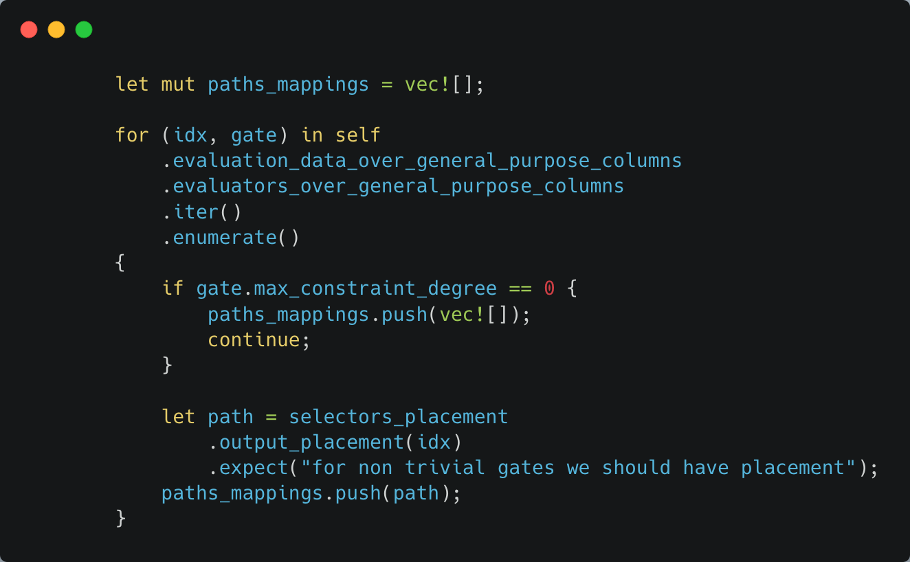
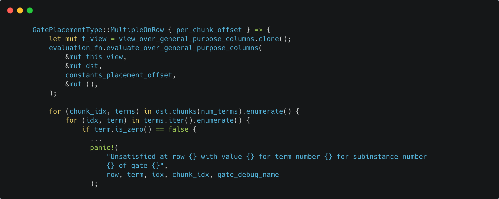
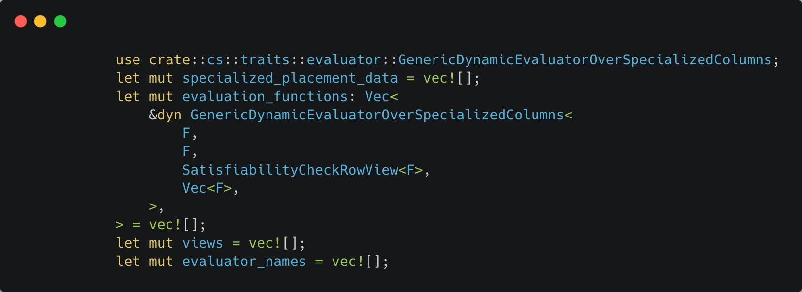
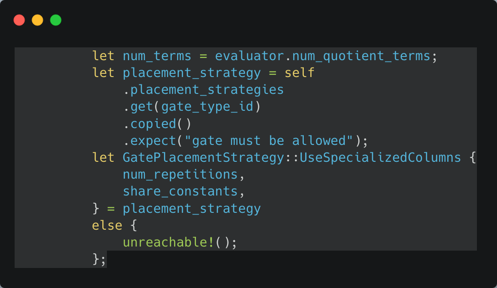

Boojum function: check_if_satisfied
Note: Please read our other documentation and tests first before reading this page.
Our circuits (and tests) depend on a function from Boojum called check_if_satisfied. You don’t need to understand it to run circuit tests, but it can be informative to learn more about Boojum and our proof system.
First we prepare the constants, variables, and witness. As a reminder, the constants are just constant numbers, the variables circuit columns that are under PLONK copy-permutation constraints (so they are close in semantics to variables in programming languages), and the witness ephemeral values that can be used to prove certain constraints, for example by providing an inverse if the variable must be non-zero.

Next we prepare a view. Instead of working with all of the columns at once, it can be helpful to work with only a subset.
.png)
Next we create the paths_mappings. For each gate in the circuit, we create a vector of booleans in the correct shape. Later, when we traverse the gates with actual inputs, we’ll be able to remember which gates should be satisfied at particular rows by computing the corresponding selector using constant columns and the paths_mappings.

Now, we have to actually check everything. The checks for the rows depend on whether they are under general purpose columns, or under special purpose columns.
General purpose rows:
For each row and gate, we need several things.
- Evaluator for the gate, to compute the result of the gate
- Path for the gate from the paths_mappings, to locate the gate
- Constants_placement_offset, to find the constants
- Num_terms in the evaluator
- If this is zero, we can skip the row since there is nothing to do
- Gate_debug_name
- num_constants_used
- this_view
- placement (described below)
- evaluation function
.png)
Placement is either UniqueOnRow or MultipleOnRow. UniqueOnRow means there is only one gate on the row (typically because the gate is larger / more complicated). MultipleOnRow means there are multiple gates within the same row (typically because the gate is smaller). For example, if a gate only needs 30 columns, but we have 150 columns, we could include five copies fo that gate in the same row.
Next, if the placement is UniqueOnRow, we call evaluate_over_general_purpose_columns. All of the evaluations should be equal to zero, or we panic.
.png)
If the placement is MultipleOnRow, we again call evaluate_over_general_purpose_columns. If any of the evaluations are non-zero, we log some extra debug information, and then panic.

This concludes evaluating and checking the generalized rows. Now we will check the specialized rows.

We start by initializing vectors for specialized_placement_data, evaluation_functions, views, and evaluator_names. Then, we iterate over each gate_type_id and evaluator.
.png)
If gate_type_id is a LookupFormalGate, we don’t need to do anything in this loop because it is handled by the lookup table. For all other cases, we need to check the evaluator’s total_quotient_terms_over_all_repetitions is non-zero.
.png)
Next, we get num_terms, num_repetitions, and share_constants, total_terms, initial_offset, per_repetition_offset, and total_constants_available. All of these together form our placement data.

.png)
Once we know the placement_data, we can keep it for later, as well as the evaluator for this gate.
.png)
We also will keep the view and evaluator name. This is all the data we need from our specialized columns.
To complete the satisfiability test on the special columns, we just need to loop through and check that each of the evaluations are zero.
.png)
.png)
Now we have checked every value on every row, so the satisfiability test is passed, and we can return true.